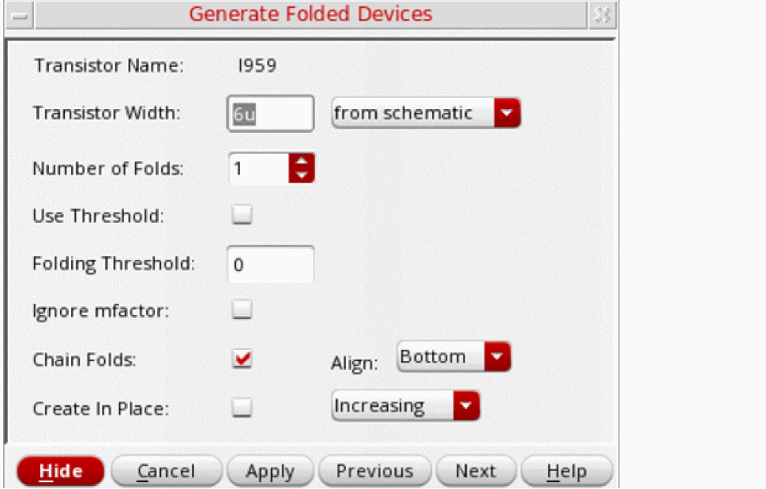
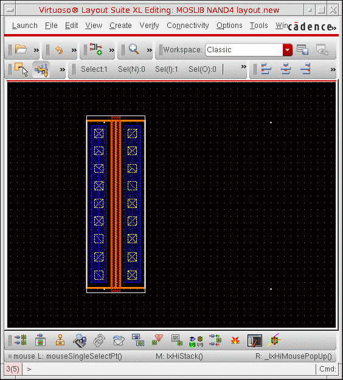
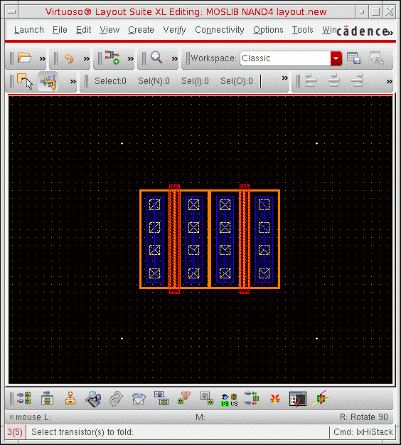
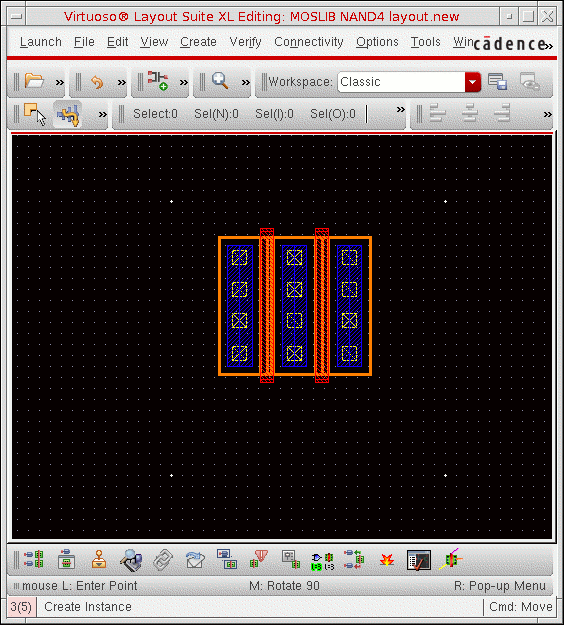
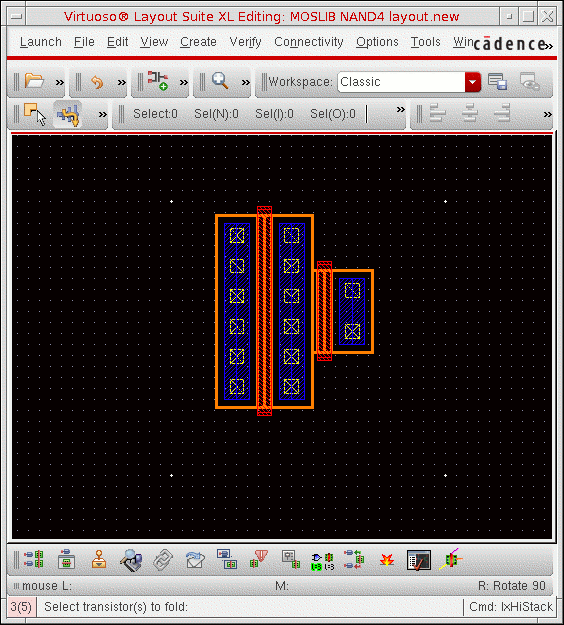

Folding a Transistor or FinFET Device
To fold a MOS transistor or a FinFET device:
-
In the schematic or layout canvas, select the device you want to fold.
When selecting a device that has already been folded, make sure you select the whole device. To do this, select it from the schematic window, or select all its folds in the layout window. -
Choose Connectivity – Generate – Folded Devices.
The Generate Folded Devices form is displayed.
The name of the selected transistor or FinFET device is shown in the Transistor Name field. (If you did not select any transistors before choosing the command, no transistor-specific information is shown in the form until you select at least one transistor.)
The width of the selected transistor is shown in the Transistor Width field, which also indicates whether the value was retrieved from the schematic view or the layout view.
The Transistor Width field is displayed when the devices selected for folding are MOS transistors that have the Width parameter set. -
Type the Number of Folds into which you want to divide the selected device.
Alternatively, use the bindkey Shift + Scroll Up/Down operation to increase or decrease the number of folds.
The maximum number of folds supported for a device is 500. Use thefoldsLimitenvironment variable to control the maximum number of folds to be generated.
This option is not available when folding a multi-fingered device. -
Click Apply in the form and move the cursor into the layout canvas.The outline of the folded device follows the cursor in the canvas.
If you have thelxBindKeys.illoaded, you can click the middle mouse button to rotate the device by R90, orShift-click the middle mouse button to flip the device alternately about its X and Y axes. -
Click in the layout where you want to place the folded device.
The folded device is placed in the canvas. The original device orientation is preserved. The net on the left of the device (or on the bottom for vertically-oriented devices) is the same before and after folding. -
Select the device again in the canvas.
The form updates to show the individual folds and the widths specified for them. - Select Use Threshold to fold based on the folding threshold value for the selected component type.
- Type the Folding Threshold value to specify the maximum device width beyond which the selected devices will be automatically folded.
- Select Chain Folds to automatically chain the newly created folds.
-
Click Apply in the form, move the cursor into the layout canvas, and click where you want to place the folded device.
The new folds are now chained together. -
Select the device again in the canvas and change the widths of the individual folds in the form.
This option is not available when folding a multi-fingered device. -
Click the Distribute button to distribute the device width across the remaining folds, or type individual values into each Width field.
The system issues a warning if the total width you specify exceeds the schematic width or the effective width.
If you set a width with no unit, the unit is automatically updated with the default value of the CDF width parameter. For example, if the default CDF value is3uand you enter a width of6, the width is set to6u. If the default CDF value is3and you enter a width of6, the width remains set to6.
If the device selected for folding is a FinFET device driven for folding by the Number of fins value, clicking Distribute divides the total fins across all the folds such that each fold gets a whole number of fins. Total Fins is the sum of the fins in each fold of a FinFET device.
The Fins field accepts only integer values for fins. If you type in a non-integer value, Layout XL automatically reverts to the last integer value.
If a FinFET device has two fins and the Number of folds is specified as 2, clicking Distribute splits the fins between the two folds such that one fold has two fins and the other fold has one fin. When folding based on the number of fins, the distribution is always such that each fold gets a whole number of fins. -
Click Apply in the form, and then click in the canvas to place the new folded device.

- In the Navigator assistant or layout canvas, right-click the folded device and choose Unfold from the shortcut menu.
The device is unfolded and reduced to a single fold of the same width as the schematic instance or to the total layout width if the unfoldUseLayoutWidths environment variable is set to t.
Related Topics
Return to top